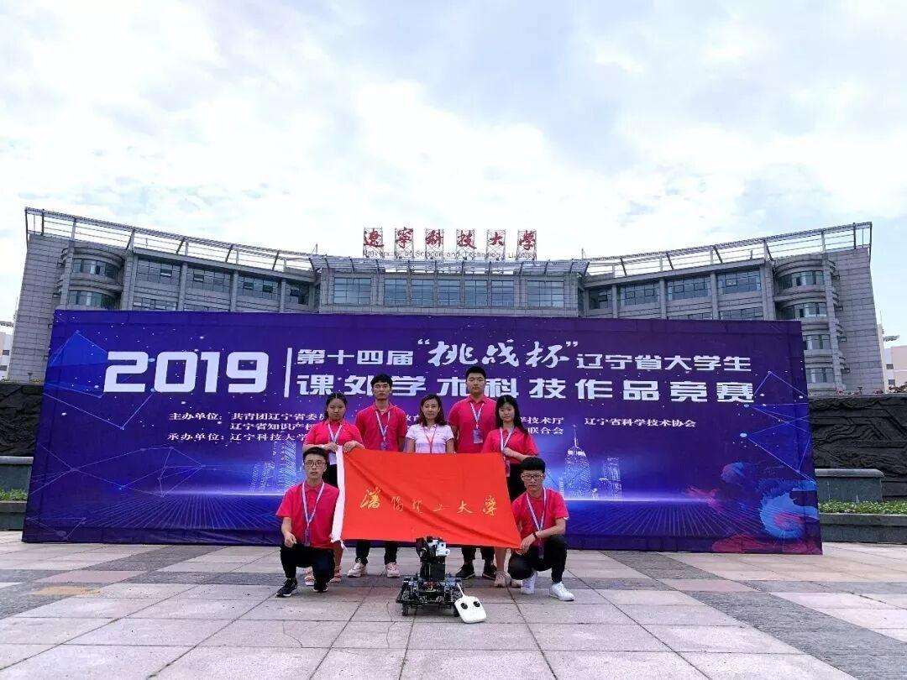
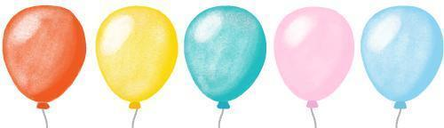
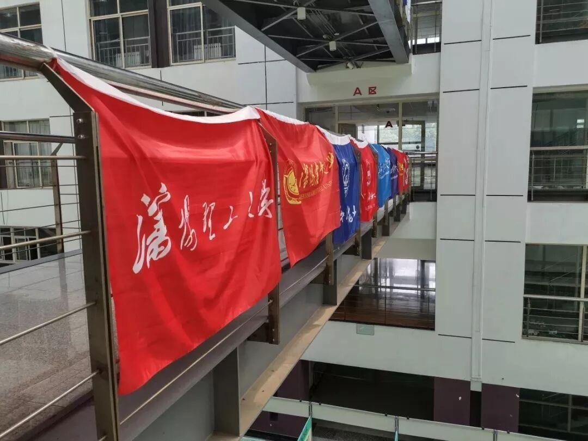

“挑战杯”省赛决赛完美落幕！

“挑战杯”省赛决赛完美落幕！


“挑战杯”省赛决赛完美落幕，其中必须要提的一件获得省特等奖入围决赛的作品——双目识别双控投弹机器人，它是我们电协优秀学长的作品啦!!!同时14日举行了创新创业项目落地签约仪式，来自8所高校的8个项目经过推荐选拔进行了路演，双目识别双控投弹教学机器人作为路演项目之一进行了展示分享。（允许我们大家为此小小（da da）的骄傲一下！）电协以你们为荣！
2019年6月14日，第十四届“挑战杯”辽宁省大学生课外学术科技作品竞赛终审决赛在辽宁科技大学完美落幕。今年的竞赛，我校共评选出 29 项作品代表沈阳理工大学参加 第十四届“挑战杯”辽宁省大学生课外学术科技作品竞赛。在申报的 29 项作品中，进入省级决赛 3 项、省级二等奖 8 项、省级三等奖 14 项。

入围终审决赛
【北雁南飞：辽宁省大学生就业地南移的调查与分析报告】
李含驰 滕健 周凯旋
【双目识别双控投弹教学机器人】
高航 杨洋 彭翔宇 赵世豪
贾文 蔡毓鑫 阴祖军 朱思腾
【整合旅游资源，打造旅游名城
东北振兴视域下沈阳城市旅游业发展调查研究】
陈维维 马一嘉 郑兴建 崔梦宇
王靖景 林钏咏 施和伟 李利鹏
2019 年 6 月 13 日 9 : 00，第十四届“挑战杯”辽宁省大学生课外学术科技作品竞赛终审决赛开幕式在辽宁科技大学校礼堂举行。团省委书记张宝东出席开幕式并讲话，辽宁科技大学校长张志强致欢迎辞。省知识产权局副局长吴国纯、辽宁科技大学党委书记李平、鞍山市委常委秘书长郭志强、辽宁科技大学党委副书记侯锡林等领导以及省教育厅、省科技厅、省科协、辽宁社科院等单位的相关负责同志共同出席开幕式，参赛高校的领导和师生代表及各新闻媒体共同参加了开幕式。

“挑战杯”竞赛被誉为中国大学生科技创新创业的“奥林匹克”盛会，是目前国内大学生最关注最热门的全国性竞赛，也是全国最具代表性、权威性、示范性、导向性的大学生竞赛。在这里，激发了同学们的创新思维，培养了同学们的科研能力和团队意识，营造了浓厚的科技创新氛围，为广大青年提供了展示风采的平台。

所有的好成绩都源于你们的努力呀，你们用实际行动给学弟学妹们做了一个非常nice的榜样！
在此，预祝我校参赛队伍取得理想成绩，再创佳绩！
排版：杜 遇 涵
图片：团媒中心
文字：团媒中心